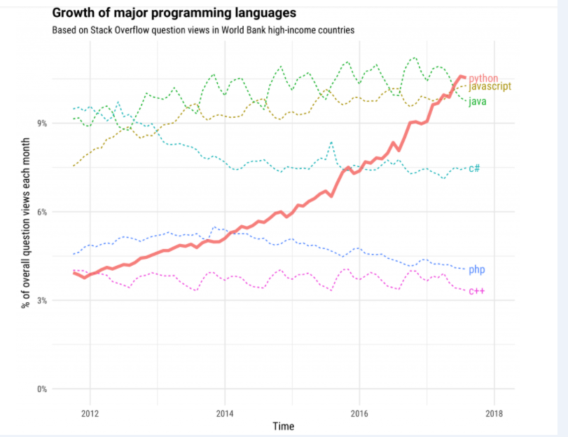

The TIOBE Programming Community Index, which gauges the popularity of the programming languages based on the search engine results, places Java as the most popular language, as of July 2018. Here is a chart of the TIOBE index:

Worth mentioning, the continued interest in the field of artificial intelligence could be fueling the demand for Python. In fact, Stack Overflow calls it the “fastest growing major programming language.” Here is a chart showing the incredible growth of Python:
